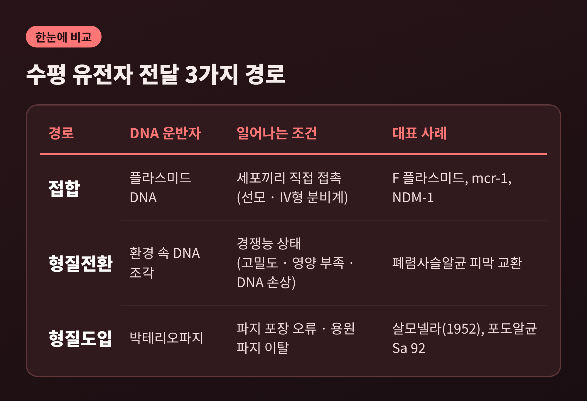
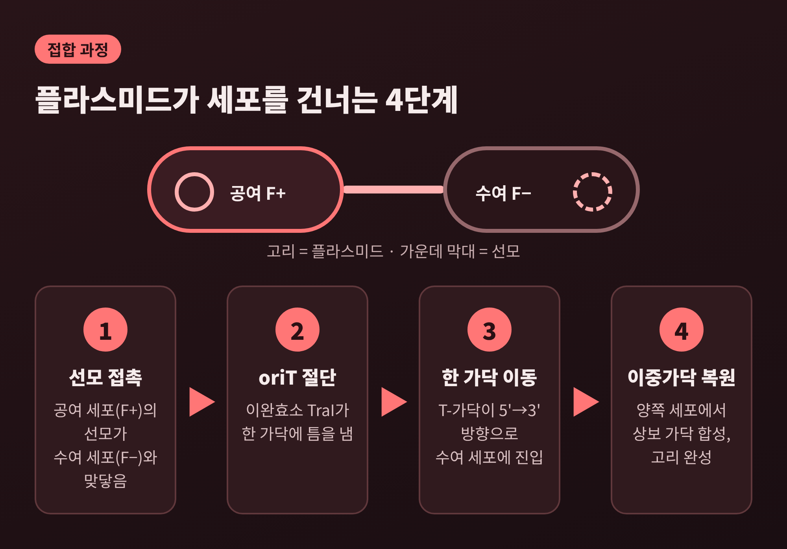
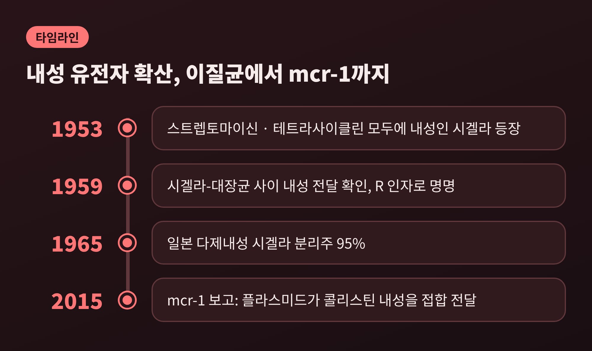

오늘은 세균의 수평 유전자 전달에 대해 이야기해 보려 합니다. 세균은 부모에게 물려받는 유전자 말고도, 이웃 세균에게서 유전자를 직접 받아 옵니다. 접합·형질전환·형질도입이라는 세 가지 길이 있고, 항생제 내성이 빠르게 퍼지는 가장 큰 이유가 바로 이 길입니다.
우리는 유전을 부모에서 자식으로 내려가는 일이라고 배웁니다. 세균도 분열하면서 같은 방식으로 유전자를 물려줍니다. 이를 수직 전달이라 부릅니다.
수평 유전자 전달은 다릅니다. 같은 세대의 세포끼리, 때로는 종(種)의 경계를 넘어 유전 물질을 주고받는 일입니다. 위키피디아의 정리에 따르면 이것은 세균 사이에 항생제 내성을 퍼뜨리는 주된 기전입니다.
세 가지 경로는 이렇게 구분됩니다.

형질전환이 가장 먼저 드러났습니다. 1928년 영국의 세균학자 프레더릭 그리피스는 병원성이 없는 폐렴사슬알균이 열로 죽인 병원성 균주를 만난 뒤 병원성을 띠게 되는 현상을 보고했습니다. 그는 원인 물질에 '형질전환 인자'라는 이름을 붙였습니다. 1944년 에이버리, 매클라우드, 매카티가 그 정체를 DNA로 밝혔습니다. 병원성 균주에서 뽑은 DNA만으로 무해한 균주를 병원성으로 바꾼 것입니다.
접합은 1946년입니다. 조슈아 레더버그는 에드워드 테이텀과 함께 대장균 K12의 영양요구 돌연변이 두 계통을 섞어 키웠습니다. 한 계통은 비오틴과 메티오닌을, 다른 계통은 트레오닌과 프롤린을 스스로 만들지 못했습니다. 그런데 섞어 키운 쪽에서는 아무 보충제 없이 자라는 세포가 나왔습니다. 각 계통을 따로 키운 쪽에서는 하나도 나오지 않았습니다. 두 세포가 유전자를 교환했다는 뜻입니다.
형질도입은 1952년 진더와 레더버그가 살모넬라에서 발견했습니다.
예전에는 세균이 오직 분열로만 유전자를 넓힌다고 생각했습니다. 지금은 세균이 이웃의 유전자를 끌어다 쓰는 존재라는 사실이 상식이 되었습니다.
접합의 주인공은 플라스미드입니다. 염색체와 별개로 존재하는 고리 모양의 DNA 조각입니다. 대장균의 F 플라스미드는 약 100 kb 크기이고, 세포당 하나만 존재합니다. 이를 가진 세포가 공여 세포(F+), 없는 세포가 수여 세포(F−)입니다.
F 플라스미드의 tra/trb 구역은 약 33 kb에 유전자 약 40개가 모여 있습니다. 여기에 선모(pilus)를 만드는 유전자가 들어 있습니다. 선모가 DNA의 통로라고 여겨지지만, 정확한 기전에는 아직 논쟁이 있습니다.
과정은 다음과 같이 요약됩니다.
결과적으로 두 세포 모두 플라스미드를 갖게 됩니다. 원본을 건네고도 잃지 않는 셈입니다.

플라스미드가 염색체에 끼어든 경우는 Hfr이라 부릅니다. 이때는 염색체 DNA도 함께 넘어갑니다. 대장균 염색체 전체를 옮기는 데 약 100분이 걸리고, 연구자들은 믹서로 두 세포를 중간에 떼어내는 '중단 교배' 실험으로 유전자 지도를 그렸습니다.
플라스미드가 모두 스스로 움직이는 것은 아닙니다. 전달 유전자를 갖춘 접합성 플라스미드가 있고, 일부만 가진 '이동 가능' 플라스미드는 접합성 플라스미드가 곁에 있을 때 편승해 옮겨갑니다. 일부 R 플라스미드는 스스로 이동하지 못하는 다른 R 인자의 전달을 돕기도 합니다.
형질전환은 세균이 '경쟁능(competence)'이라는 일시적 상태에 들어갔을 때 일어납니다. 경쟁능은 대개 세포 밀도가 높고 영양이 부족할 때 유도됩니다. 바실러스 서브틸리스는 이 상태를 위해 약 40개 유전자를 가동합니다. 폐렴사슬알균에서는 미토마이신 C나 플루오로퀴놀론 같은 DNA 손상 물질이 경쟁능을 유도한다는 보고가 있습니다. 항생제가 오히려 유전자 흡수를 부추길 수 있다는 의미입니다.
DNA 흡수는 정교합니다. 이중가닥이 세포 표면 수용체에 붙은 뒤, 한 가닥만 세포막을 통과하고 나머지는 효소로 분해됩니다. 들어온 가닥은 RecA 단백질의 도움으로 염색체에 끼워집니다.
폐렴사슬알균은 한 걸음 더 나아갑니다. 세포가 경쟁능 자극 펩타이드(CSP)를 분비해 서로의 상태를 맞춥니다. 경쟁능 세포는 가수분해효소 CbpD로 경쟁능이 없는 이웃을 녹여 DNA를 꺼내 쓰는데, 이를 '형제 살해'라 부릅니다. 자신은 ComM 단백질로 보호합니다. 이렇게 들여온 DNA 덕분에 피막 합성 구역의 30~50 kb가 다른 균주에서 건너온 계통이 보고되었고, 페니실린 결합 단백질 유전자도 근연종과 주고받은 모자이크 형태가 확인되었습니다.
형질도입은 파지의 실수에서 시작됩니다. 파지는 자신의 머리를 DNA로 가득 채우려 하는데, 이 포장 과정의 정확도가 낮아 세균의 DNA 조각이 대신 들어가기도 합니다. 이것이 일반 형질도입입니다. 용원성 파지가 염색체에서 빠져나오며 이웃 유전자를 함께 가져가는 경우는 특수 형질도입이라 부릅니다.
사건 하나하나는 드뭅니다. 흑해에서 분리한 파지 Sa 92가 황색포도알균 사이에서 시프로플록사신 내성을 옮긴 한 연구 초록에서, 빈도는 PFU당 2.25×10⁻⁷이었습니다. 다만 하수처리장에는 파지가 리터당 약 10⁵~10⁸ pfu 있고, 한 리뷰는 그곳에서 형질도입이 시간당 수천 번 일어날 수 있다고 추정합니다. 드문 일도 개체 수가 많으면 쌓입니다.
수평 전달이 내성 문제의 핵심이 된 장면은 1950년대 일본에서 확인됩니다. 전쟁 이후 세균성 이질이 늘었고, 설파제와 스트렙토마이신, 테트라사이클린이 차례로 쓰였습니다. 1953년에는 앞의 두 약에 모두 내성인 시겔라가 나타났습니다. 1950년대 후반에는 네 가지 약에 내성인 시겔라의 유행이 있었습니다. 내성 시겔라 환자에게서 내성 대장균도 함께 나왔고, 연구자들은 환자의 장 속에서 종을 넘어 내성 유전자 꾸러미가 옮겨갔다고 해석했습니다.
1959년 시겔라와 대장균 사이의 약제 내성 전달이 처음 확인되었고, 이 전달 가능한 유전 요소는 R 인자라 불렸습니다. 일본의 다제내성 시겔라 분리주는 1965년 95%에 이르렀습니다. 왓나베 쓰토무 연구진은 이 유전자가 염색체 밖의 에피솜, 곧 오늘날의 플라스미드에 실려 있다고 제안했습니다.
내성 유전자는 한 줄로 늘어서 있는 경우가 많습니다. 통합효소(integron)는 이를 가능하게 하는 장치입니다. 통합효소 유전자 intI가 재조합 부위 attI에 유전자 카세트를 끼워 넣고, 새로 들어온 카세트일수록 프로모터 Pc에 가깝게 놓입니다. 이동성 통합효소에 실린 카세트는 거의 전부 항생제 내성 유전자입니다. 스트레스 반응(SOS)이 IntI 발현을 조절한다는 점도 보고되었습니다.

오늘날의 대표 사례는 mcr-1입니다. 2015년 11월 중국 연구진은 돼지에서 분리한 대장균에서 콜리스틴 계열(폴리믹신) 내성을 일으키는 mcr-1이 플라스미드에 실려 있음을 보고했습니다. 이 플라스미드는 대장균 수여 세포로 세포당 10⁻¹~10⁻³ 빈도로 접합 전달되었고, 폐렴막대균과 녹농균에서도 유지되었습니다. 2011~2014년 중국 다섯 개 성에서 생고기 시료의 15%(523건 중 78건), 동물 시료의 21%(804건 중 166건), 감염 입원환자의 1%(1,322건 중 16건)가 이 유전자를 갖고 있었습니다. 이후 몇 달 사이에 스위스, 덴마크, 벨기에 플랑드르, 캄보디아에서도 같은 유전자가 보고되었습니다.
카바페넴 분해 효소를 만드는 NDM-1 유전자도 대부분 플라스미드에 있습니다. 장내세균에서 20개 호환성군의 NDM-1 플라스미드가 보고되었습니다. 멕시코 한 병원의 폐렴막대균 균혈증 분리주 80건 중 10건(12.5%)이 NDM-1을 지녔고, 그중 5개 균주가 대장균에 접합으로 유전자를 넘겼습니다.
다만 모든 내성이 수평 전달 때문은 아닙니다. 같은 멕시코 연구에서 콜리스틴 내성 균주 43개 중 mcr-1을 가진 것은 없었고, 내성이 접합으로 전달되지도 않았습니다. 염색체 돌연변이가 원인으로 의심되었습니다. 또 KPC 내성은 주로 균주 자체가 퍼지는 클론 확산으로 전 세계에 퍼졌다고 합니다. 유전자의 이동과 균주의 이동은 함께 봐야 합니다.
내성이 퍼지면 치료할 약이 사라집니다. 2019년 분석에 따르면 세균성 항생제 내성과 연관된 사망은 495만 명, 내성이 직접 원인이 된 사망은 127만 명으로 추정됩니다. 23개 병원체와 88개 병원체-약제 조합을 204개 국가·지역에서 분석한 결과입니다. 서아프리카 하위 사하라의 기인 사망률이 10만 명당 27.3으로 가장 높았고, 오스트랄라시아는 6.5로 가장 낮았습니다. 대장균, 황색포도알균, 폐렴막대균, 폐렴사슬알균, 아시네토박터 바우마니, 녹농균 여섯 종이 기인 사망 92만 9천 명을 차지했습니다.
WHO는 2023년 실험실에서 확인된 세균 감염 6건 중 1건이 항생제 내성이었다고 밝혔고, 2018~2023년 감시 대상 병원체-항생제 조합의 40% 이상에서 내성이 늘었다고 보고합니다. 미국 CDC는 연간 280만 건 이상의 내성 감염과 3만 5천 명 이상의 사망을 집계했습니다.
여기에 환경 요인이 얹힙니다. 일부 연구에서 이부프로펜, 나프록센, 디클로페낙 같은 비항생제 약물이 내성 유전자의 접합 전달을 늘렸고, 중금속과 페놀계 화합물이 수평 전달을 촉진했다는 결과가 나왔습니다. 항생제 저농도 노출, 자외선, 중금속은 프로파지를 깨워 내성 유전자 포장을 늘릴 수 있습니다. 하수처리 과정에서 염소 소독은 파지를 불활성화하지 못하고 오존 등이 더 효과적이라는 점도 알려져 있습니다.
정리하면 이렇습니다.
세균의 수평 유전자 전달은 접합, 형질전환, 형질도입 세 길로 이루어지고, 항생제 내성은 이 길을 따라 종을 넘어 번집니다. 그리고 이 길은 항생제나 오염 물질 같은 환경 압력이 오히려 넓혀 줄 수 있습니다.
저는 이 글을 정리하며 한 가지를 분명히 느꼈습니다. 내성 문제를 개별 세균의 돌연변이로만 보면 반쪽만 보게 됩니다. 물론 아직 모르는 것도 많습니다. 형질도입의 빈도는 측정 방식마다 달라 하나의 숫자로 말하기 어렵고, 접합의 정확한 통로도 논쟁 중입니다.
"세균은 혼자 내성을 얻지 않고, 이웃과 나누어 얻는다."
그 사실을 알고 나면 항생제를 꼭 필요할 때만 쓰자는 당부가 훨씬 구체적으로 들립니다. 이 길을 좁히는 일은 결국 약을 쓰는 우리의 몫이라고 생각합니다.